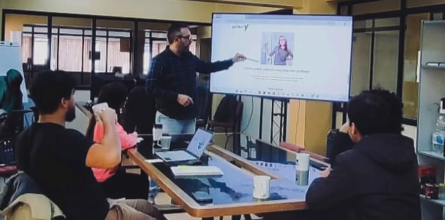
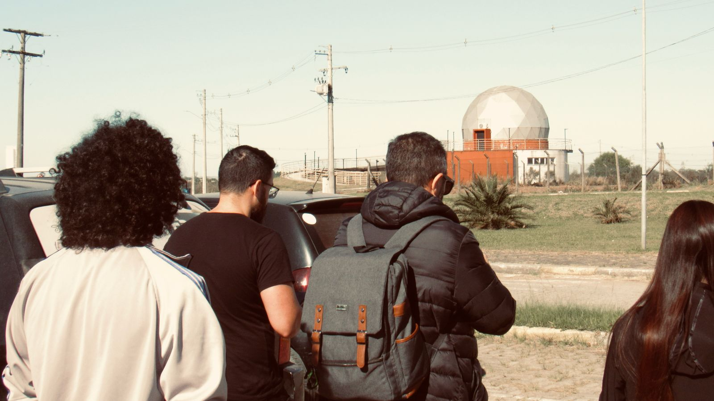
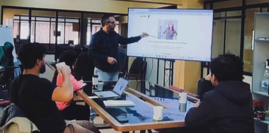
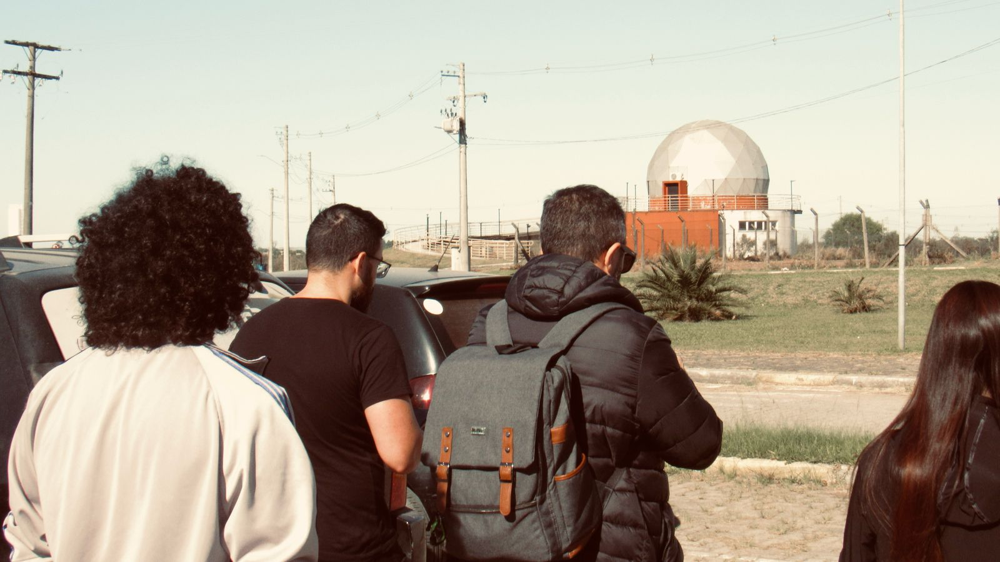

O ponto de virada na minha formação tecnológica
Foi aqui que deixei de enxergar tecnologia apenas como código e passei a entendê-la como produto, decisão e impacto.
Foi aqui que deixei de enxergar tecnologia apenas como código e passei a entendê-la como produto, decisão e impacto.
Minha experiência no programa e-Level, atuando dentro da
Proby, representou um divisor de águas na minha formação.
O produto — uma plataforma desenvolvida em Laravel,
com uso de inteligência artificial —
estava em fase de consolidação do MVP.
Mesmo não atuando diretamente como desenvolvedor,
estive em comunicação constante com o time técnico,
participando de testes funcionais, validações,
refinamento de fluxos e decisões de produto.
 



A plataforma lidava com problemas globais descritos de forma subjetiva e complexa. Antes de pensar em soluções, aprendi a interpretar contextos, validar informações e identificar padrões reais.
Passei a participar ativamente da validação do MVP,
ajudando a definir o que realmente deveria existir
na primeira versão do produto.
Aprendi que dizer “não” para certas ideias
é tão importante quanto desenvolver novas soluções.
Atuando como ponte entre negócio e tecnologia, ajudei a traduzir necessidades em fluxos claros para o time de desenvolvimento, garantindo que o sistema em Laravel evoluísse alinhado ao propósito do produto.
A partir das análises, testes e feedbacks que levei ao time,
os CEOs conseguiram visualizar que o produto
já estava pronto para testes de mercado.
Isso evitou retrabalho,
economizou tempo
e acelerou decisões estratégicas.
Não são apenas tecnologias — são meios para garantir estabilidade, clareza e responsabilidade em sistemas já em produção.
“Não é sobre saber todas as respostas. É sobre aprender a fazer as perguntas certas.”